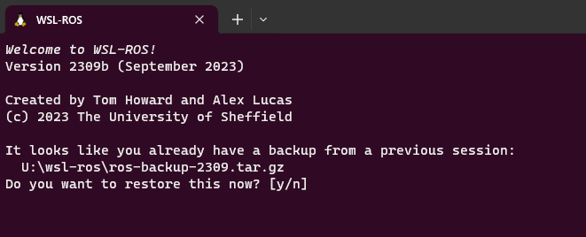
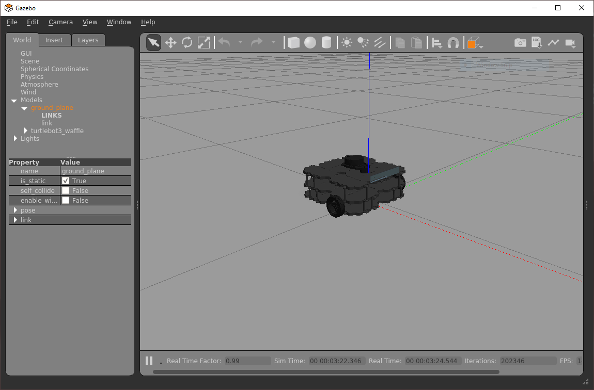

Part 2: Odometry & Navigation
Introduction¶
Exercises: 5
Estimated Completion Time: 3 hours
Aims¶
In Part 2 you will learn how to control a ROS robot's position and velocity from both the command line and through ROS Nodes. You will also learn how to interpret the data that allows us to monitor a robot's position in its physical environment (odometry). The things you will learn here form the basis for all robot navigation in ROS, from simple open-loop methods to more advanced closed-loop control (both of which you will explore).
Intended Learning Outcomes¶
By the end of this session you will be able to:
- Interpret the Odometry data published by a ROS Robot and identify the parts of these messages that are relevant to a 2-wheeled differential drive robot (such as the TurtleBot3).
- Develop Python nodes to obtain Odometry messages from an active ROS network and translate them to provide useful information about a robot's pose in a convenient, human-readable way.
- Implement open-loop velocity control of a robot using ROS command-line tools.
- Develop Python nodes that use open-loop velocity control methods to make a robot follow a pre-defined motion path.
- Combine both publisher & subscriber communication methods into a single Python node to implement closed-loop (odometry-based) velocity control of a robot.
- Explain the limitations of Odometry-based motion control methods.
Quick Links¶
- Exercise 1: Exploring Odometry Data
- Exercise 2: Creating a Python node to process Odometry data
- Exercise 3: Moving a Robot with
rostopicin the Terminal - Exercise 4: Creating a Python node to make the robot move in a circle
- Exercise 5: Making your robot follow a Square motion path
Additional Resources¶
Getting Started¶
Step 1: Launch your ROS Environment
If you haven't done so already, launch your ROS environment now:
- Using WSL-ROS on a university managed desktop machine: follow the instructions here to launch it.
- Running WSL-ROS on your own machine: launch the Windows Terminal to access a WSL-ROS terminal instance.
- Other Users: Launch a terminal instance with access to your local ROS installation.
You should now have access to a Linux terminal instance, and we'll refer to this terminal instance as TERMINAL 1.
Step 2: Restore your work (WSL-ROS Managed Desktop Users ONLY)
Remember that any work that you do within the WSL-ROS Environment will not be preserved between sessions or across different University computers. At the end of Part 1 you should have run the wsl_ros tool to back up your home directory to your University U:\ Drive. Once WSL-ROS is up and running, you should be prompted to restore this:

Enter Y to restore your work from last time. You can also restore your work at any time using the following command:
Step 3: Launch VS Code
It's also worth launching VS Code now, so that it's ready to go for when you need it later on.
WSL Users...
It's important to launch VS Code within your ROS environment using the "WSL" extension. Always remember to check for this.
Step 4: Make Sure The Course Repo is Up-To-Date
In Part 1 you should have downloaded and installed The Course Repo into your ROS environment. If you haven't done this yet then go back and do it now. If you have already done it, then it's worth just making sure it's all up-to-date, so run the following command now to do so:
TERMINAL 1:
Then run catkin build
And finally, re-source your environment:
Remember
If you have any other terminal instances open, then you'll need run source ~/.bashrc in these too, in order for the changes made by catkin build to propagate through to these as well!
Step 5: Launch the Robot Simulation
In TERMINAL 1 enter the following command to launch a simulation of a TurtleBot3 Waffle in an empty world:
TERMINAL 1:
A Gazebo simulation window should open and within this you should see a TurtleBot3 Waffle in empty space:

You're all set up and ready to go!
Position and Velocity¶
Two types of Velocity Command can be issued to any ROS Robot to make it move (and thus change its position):
- Linear Velocity: The velocity at which the robot moves forwards or backwards in one of its principal axes.
- Angular Velocity: The velocity at which the robot rotates about one of its principal axes.
Principal Axes¶
The motion (i.e. the velocity) of any mobile robot can be defined in terms of three principal axes: X, Y and Z. In the context of our TurtleBot3 Waffle, these axes (and the motion about them) are as follows:

In theory then, a robot can move linearly or angularly about any of these three axes, as shown by the arrows in the figure. That's six Degrees of Freedom (DOFs) in total, achieved based on a robot's design and the actuators it is equipped with.
You should hopefully recall from the "Introducing the Robots" page that our TurtleBot3 Waffles only have two motors though, so they don't actually have six DOFs! These two motors can be controlled independently, which is known as a "differential drive" configuration, and ultimately provides it with a total of two degrees of freedom in total, as illustrated below.

It can therefore only move linearly in the x-axis (Forwards/Backwards) and angularly in the z-axis (Yaw).
It's also worth noting (while we're on the subject of motion) that our TurtleBot3 Waffles have maximum velocity limits, which were also defined on the "Robots" page.
Question
What are the maximum velocity limits of our robots?
ROS Velocity Commands¶
In Part 1 you learnt how to list all the topics that are currently active on a ROS system. Open up a new terminal instance now (TERMINAL 2) and use what you learnt previously to list all the topics that are active on the ROS network now, as a result of launching the Gazebo simulation earlier.
Questions
- Which topic in the list do you think could be used to control the velocity of the robot?
- Use the
rostopic infocommand on the topic to find out more about it.
The topic you identified1 should use a message of the geometry_msgs/Twist type. You'll have to send messages of this type to this topic in order to make the robot move. Use the rosmsg command (as you did in Part 1) to find out more about the format of this message2.
You should now be looking at a message format that looks like this:
geometry_msgs/Vector3 linear
float64 x
float64 y
float64 z
geometry_msgs/Vector3 angular
float64 x
float64 y
float64 z
There are six parameters that we can assign values to here:
linear.xlinear.ylinear.zangular.xangular.yangular.z
These relate to a robot's six degrees of freedom (about its three principal axes), as we discussed above. These topic messages are therefore formatted to give a ROS Programmer the ability to ask a robot to move in any one of its six DOFs.
geometry_msgs/Vector3 linear
float64 x <-- Forwards (or Backwards)
float64 y <-- Left (or Right)
float64 z <-- Up (or Down)
geometry_msgs/Vector3 angular
float64 x <-- Roll
float64 y <-- Pitch
float64 z <-- Yaw
As we also learnt above though, our TurtleBots can only actually move with linear velocity in the x-axis and angular velocity in the z-axis. As a result then, only velocity commands issued to the linear.x (Forwards/Backwards) or angular.z (Yaw) parts of this message will have any effect.
Robot Odometry¶
Another topic that should have appeared when you ran rostopic list earlier is /odom. This topic contains Odometry data, which is also essential for robot navigation and is a basic feedback signal, allowing a robot to approximate its location.
Exercise 1: Exploring Odometry Data¶
-
In TERMINAL 2 use the
rostopic echocommand to display the odometry data currently being published by our simulated robot:
TERMINAL 2:
Expand the terminal window as necessary so that you can see the whole topic message (it starts with
headerand ends with---).Question
What does the
-coption in the command above actually do? -
Now, you need to launch a new Windows Terminal instance so that you can view it side-by-side with TERMINAL 2. To do this, press the "New Tab" button whilst pressing the Shift key. We'll call this one TERMINAL 3. Arrange both windows side-by-side, so you can see what's happening in both, simultaneously.
-
In TERMINAL 3 launch the
turtlebot3_teleop_keyboardnode as you did last time:
TERMINAL 3:
-
In TERMINAL 3 enter A a couple of times to make the robot rotate on the spot. Observe how the odometry data changes in TERMINAL 2. Is there anything in the
twistpart of the/odommessage that corresponds to the "angular vel" that you are setting in TERMINAL 3? - Now press the S key to halt the robot, then press W a couple of times to make the robot drive forwards. How does the
twistpart of the message now correspond to the "linear vel" setting in TERMINAL 3? -
Now press D a couple of times and your robot should start to move in a circle. What linear and angular velocities are you requesting in TERMINAL 3, and how are these represented in the
twistpart of the/odommessage? What about theposepart of the message? How is this data changing as your robot moves in a circular path.Question
What do you think
twistandposeare actually telling us? -
Press S in TERMINAL 3 to stop the robot (but leave the
turtlebot3_teleop_keynode running). Then, press Ctrl+C in TERMINAL 2 to shut down therostopic echoprocess. -
Let's look at the
posepart of theOdometrymessage in more detail now. With the robot stationary, userosrunto run a Python node that we have created to help illustrate how this relates to the robot's position and orientation in its environment:
TERMINAL 2:
-
Now (using the
turtlebot3_teleop_keynode in TERMINAL 3), drive your robot around again, keeping an eye on the outputs that are being printed by therobot_pose.pynode in TERMINAL 2 as you do so.The output of the
robot_pose.pynode shows you how the robot's position and orientation (i.e. "pose") are changing in real-time as you move the robot around. The"initial"column tells us the robot's pose when the node was first launched, and the"current"column show us what its pose currently is. The"delta"column then shows the difference between the two.Question
Which pose parameters haven't changed, and is this what you would expect (considering the robot's principal axes, as illustrated above)?
-
Press Ctrl+C in TERMINAL 2 and TERMINAL 3, to stop the
robot_pose.pyandturtlebot3_teleop_keynodes. Then, close down TERMINAL 3 so that only one Windows Terminal application remains open with 2 active tabs: TERMINAL 1 and TERMINAL 2.
What is Odometry?¶
We can learn more about Odometry data by using the rostopic info command:
TERMINAL 2:
This provides information about the type of message used by this topic:
We can find out more about this using the rosmsg info command:
TERMINAL 2:
Which tells us that the nav_msgs/Odometry message contains four base elements:
- header
- child_frame_id
- pose
- twist
Pose¶
Pose tells us the position and orientation of the robot relative to an arbitrary reference point (typically where the robot was when it was turned on). The pose is determined from:
- Data from the Inertial Measurement Unit (IMU) on the OpenCR board,
- Data from both the left and right wheel encoders,
- An estimation of the distance travelled by the robot from its pre-defined reference point (using dead-reckoning).
Position data is important for determining the movement of our robot, and from this we can estimate its location in 3-dimensional space.
Orientation is expressed in units of Quaternions, and needs to be converted into Euler angles (in radians) about the principal axes. Fortunately, there are functions within the ROS tf library to do that for us, which we can use in any Python node as follows:
from tf.transformations import euler_from_quaternion
(roll, pitch, yaw) = euler_from_quaternion([orientation.x,
orientation.y, orientation.z, orientation.w],
'sxyz')
Our TurtleBot3 can only move in a 2D plane and so, actually, its pose can be fully represented by 3 parameters: (x,y,θz), where x and y are the 2D coordinates of the robot in the X-Y plane, and θz is the angle of the robot about the z (yaw) axis.
Question
In the previous exercise, did you notice how the linear_z, theta_x and theta_y values in the delta column all remained at 0.000, even when the robot was moving around?
Twist¶
Twist tells us the current linear and angular velocities of the robot, and this data comes directly from the wheel encoders.
Once again, all of this data is defined in terms of the principal axes, as illustrated in the figure above.
Exercise 2: Creating a Python node to process Odometry data¶
In Part 1 you learnt how to create a package and build simple nodes in Python to publish and subscribe to messages on a topic. In this exercise you will build a new subscriber node, much like you did in the previous session, but this one will subscribe to the /odom topic that we've been talking about above. You'll also create a new package called part2_navigation for this node to live in!
-
Create a package in the same way as you did in Part 1, this time called
part2_navigation, which depends on therospy,nav_msgsandgeometry_msgslibraries. Use thecatkin_create_pkgtool as you did in Part 1. Remember to ensure that you are located in the~/catkin_ws/src/directory before you do this though:
TERMINAL 2:
Then:
Fill in the Blank!
Recall how we used the
catkin_create_pkgtool in Part 1, but adapt this now for thepart2_navigationpackage, as detailed above. -
Run
catkin buildon this:
TERMINAL 2:
and then re-source your environment:
-
The subscriber that we will build here will be structured in much the same way as the subscriber that we built in Part 1. The difference now though is that this one will subscribe to the
/odomtopic (instead of/chatter), and its callback function will therefore receiveOdometrytype messages (instead ofString), so we'll have to deal with those a bit differently. We've created a template for this to help you to get started. Download this into thesrcdirectory of your newpart2_navigationpackage now:
TERMINAL 2:
- Step 1: navigate to the
srcdirectory of yourpart2_navigationpackage: - Then download the template code from GitHub:
- Finally, make this executable using
chmod:
- Step 1: navigate to the
-
Run this as it is to see what happens to begin with:
TERMINAL 2:
... Hmmm, something's wrong here isn't it!? You may have seen the following error:
The clue here is the
python3\r(specifically the\rbit). This is a Windows line ending...Text files (including things like Python scripts) created on Windows use different line endings (i.e. the characters that signify the end of each line of text) to those created on Linux. Windows uses a "carriage return" and a "line feed" (
\r\n) at the end of each line, but Linux uses just a "line feed" (\n)3. Because we're working within a Linux environment here (Ubuntu), we must make sure we're using Linux line endings at all times! We can change this easily from inside VS Code...- In the VS Code File Explorer navigate to the
~/catkin_ws/src/part2_navigation/srcfolder and open theodom_subscriber.pyfile. - In the blue bar along the bottom of the VS Code screen (towards the bottom right-hand corner) you should see the text
CRLF. Click on this and a menu should then appear at the top of the screen with the text"Select End of Line Sequence". - Select the
LFoption in this menu, then save the file.

- In the VS Code File Explorer navigate to the
-
OK, the file should run now, so launch it (using
rosrunagain) and see what it does. -
Have a think about what's different between this and the subscriber from last time...
In the Subscriber from Part 1 we were working with a
Stringtype message from thestd_msgspackage, whereas this time we're using anOdometrymessage from thenav_msgspackage instead - notice how the imports and the callback function have changed as a result of this. -
You need to add some additional code to the callback function now:
- The node needs to print the robot's real-time odometry data to the terminal in the form:
(x,y,θz). - The format of the message has already been structured for you, but you need to add in the relevant variables that represent the correct elements of the robot's real-time pose.
- You'll need to use the
euler_from_quaternionfunction from thetf.transformationslibrary to convert the raw orientation values from Quaternions into Radians. If you need a hint, why not have a look back at this bit from earlier, or at the source code for therobot_pose.pynode that we launched from thetuos_examplespackage in the previous exercise.
- The node needs to print the robot's real-time odometry data to the terminal in the form:
-
Launch your node using
rosrunand observe how the output (the formatted odometry data) changes whilst you move the robot around again using theturtlebot3_teleop_keynode in a new terminal instance (TERMINAL 3). - Stop your
odom_subscriber.pynode in TERMINAL 2 and theturtlebot3_teleopnode in TERMINAL 3 by entering Ctrl+C in each of the terminals.
Using WSL-ROS on the University Managed Desktops?
Remember: any work that you do in the WSL-ROS environment on campus machines will not be preserved automatically. You should therefore backup your work to your University U:\ drive regularly to avoid losing anything. To do this, run the following command in any WSL-ROS terminal instance (now!):
Basic Navigation: Open-loop Velocity Control¶
Exercise 3: Moving a Robot with rostopic in the Terminal¶
Warning
Make sure that you've stopped the turtlebot3_teleop_key node running in TERMINAL 3 (by entering Ctrl+C ) before starting this exercise.
We can use the rostopic pub command to publish data to a topic from a terminal by using the command in the following way:
As we discovered earlier, the /cmd_vel topic is expecting linear and angular data, each with an x, y and z component. We can get further help with formatting this message by using the autocomplete functionality within the terminal. Type the following into TERMINAL 3 hitting the Space and Tab keys on your keyboard as indicated below:
TERMINAL 3:
The full message should then be presented to us:
rostopic pub /cmd_vel geometry_msgs/Twist "linear:
x: 0.0
y: 0.0
z: 0.0
angular:
x: 0.0
y: 0.0
z: 0.0"
- Scroll back through the message using the ← key on your keyboard and then edit the values of the various parameters, as appropriate. First, define some values that would make the robot rotate on the spot. Make a note of the command that you used.
- Enter Ctrl+C in TERMINAL 3 to stop the message from being published.
- Next, enter a command in TERMINAL 3 to make the robot move in a circle. Again, make a note of the command that you used.
- Enter Ctrl+C in TERMINAL 3 to again stop the message from being published.
- Finally, enter a command to stop the TurtleBot3 and make a note of this too.
- Enter Ctrl+C in TERMINAL 3 to stop this final message from being published.
Exercise 4: Creating a Python node to make the robot move in a circle¶
You will now create another node to control the motion of your TurtleBot3 by publishing messages to the /cmd_vel topic. You created a publisher node in Part 1, and you can use this as a starting point.
-
In TERMINAL 2, ensure that you are still located within the
srcfolder of yourpart2_navigationpackage. You could usepwdto check your current working directory, where the output should look like this:/home/student/catkin_ws/src/part2_navigation/srcIf you aren't located here then navigate to this directory using
cd. -
Create a new file called
move_circle.py:
TERMINAL 2:
... and make this file executable using thechmodcommand.
-
Open up this file in VS Code. This node should make the TurtleBot3 move in a circle with a path radius of approximately 0.5 meters:
- Your Python node needs to publish
Twistmessages to the/cmd_veltopic in order to make the TurtleBot3 move. See here for some tips on this. - Remember that our robots have a maximum linear velocity (
linear.x) of 0.26 m/s, and a maximum angular velocity (angular.z) of 1.82 rad/s. - Make sure that you code your
shutdownhook()correctly so that the robot stops moving when the node is shutdown (via Ctrl+C in the terminal that launched it).
Use this code template to get you started:
A template for the move_circle.py node#!/usr/bin/env python3 import rospy # (1)! # (2)! class Circle(): def __init__(self): self.node_name = # (3)! self.pub = rospy.Publisher() # (4)! rospy.init_node(self.node_name, anonymous=True) self.rate = # (5)! self.ctrl_c = False rospy.on_shutdown(self.shutdownhook) rospy.loginfo(f"The '{self.node_name}' node is active...") def shutdownhook(self): # (6)! self.ctrl_c = True def main(self): while not self.ctrl_c: # (7)! if __name__ == '__main__': # (8)!- This is important, we always need to import
rospy - What other imports might we need here in order to create and publish a message to make the robot move?
- Give your node a descriptive name - this is the name that it will be given when it is registered on the ROS network, and the one that you would see if you used the
rosnode listcommand. - What do you need to add here in order to set up an appropriate publisher to the
/cmd_veltopic? - Define an appropriate rate for your
main()loop to run at. - Anything in here will run when the node receives a shutdown request (i.e., we enter Ctrl+C in the terminal). What actions would be important to take here to make sure the node shuts down safely and the robot actually stops moving?
- You're going to need to create a message here containing appropriate velocities for the robot to move at. Then you'll need to actually publish that message to
/cmd_vel(via yourself.pubobject). Finally, how would you use theself.rateobject that you created above to control the execution rate of the while loop? - What will you need to do here to instantiate your
Circle()class and execute its main functionality?
Refer back to the publisher node from Part 1 to help you as you're working on this.
- Your Python node needs to publish
Advanced feature:
- Create a launch file to launch this and your
odom_subscriber.pynode simultaneously with a singleroslaunchcommand. Refer to the launch file that you created in Part 1 for a reminder on how to do this.
Assignment #2 Checkpoint
Having completed Assignment #1 up to this point, you'll now be ready to tackle Assignment #2 Task 1.
Odometry-based Navigation¶
In the previous exercise you created a Python node to make your robot move using open-loop control. To achieve this you published velocity commands to the /cmd_vel topic to make the robot follow a circular motion path.
Questions
- How do you know if your robot actually achieved the motion path that you were hoping for?
- In a real-world environment, what external factors might result in your robot not achieving its desired trajectory?
Earlier on you also learnt about Robot Odometry, which is used by the robot to keep track of its position and orientation (aka Pose) in the environment. This is determined by a process called "dead-reckoning," which is only really an approximation, but it's a fairly good one in any case, and we can use this as a feedback signal to understand if our robot is moving in the way that we expect it to. We can therefore build on the techniques that we used in the move_circle.py exercise, and now also build in the ability to subscribe to a topic too. In this case, we'll be subscribing to the /odom topic that we worked with a bit (in isolation) in Exercise 2, and use this to provide us with a feedback signal to allow us to implement some basic closed-loop control.
Exercise 5: Making your robot follow a Square motion path¶
- Make sure your
move_circle.pynode is no longer running in TERMINAL 2, stopping it with Ctrl+C if necessary. -
Make sure TERMINAL 2 is still located inside your
part2_navigationpackage4. -
Navigate to the package
srcdirectory and use the Linuxtouchcommand to create a new file calledmove_square.py:
TERMINAL 2:
-
Then make this file executable using
chmod:
TERMINAL 2:
-
Use the VS Code File Explorer to navigate to this
move_square.pyfile and open it up, ready for editing. - There's a template here to help you with this exercise. Copy and paste the template code into your new
move_square.pyfile to get you started. -
Run the code as it is to see what happens...
Fill in the Blank!
Something not quite working as expected? We may have missed out something very crucial on the very first line of the code template, can you work out what it is?!
-
Fill in the blank as required and then adapt the code to make your robot follow a square motion path of 1 x 1 meter dimensions:
- The robot's odometry will tell you how much the robot has moved and/or rotated, and so you should use this information to achieve the desired motion path.
- Your Python node will therefore need to subscribe to the
/odomtopic as well as publish to/cmd_vel.
Advanced features:
- Adapt the node further to make the robot automatically stop once it has performed two complete loops.
- Create a launch file to launch this and the
odom_subscriber.pynode from Exercise 2 simultaneously!
After following a square motion path a few times, your robot should return to the same location that it started from.
Wrapping Up¶
In this session you have learnt how to control the velocity and position of a robot from both the command-line (using ROS command-line tools) and from ROS Nodes by publishing correctly formatted messages to the /cmd_vel topic.
You have also learnt about Odometry, which is published by our robot to the /odom topic. The odometry data tells us the current linear and angular velocities of our robot in relation to its 3 principal axes. In addition to this though, it also tells us where in physical space our robot is located and oriented, which is determined based on dead-reckoning.
Questions
- If odometry is derived from dead-reckoning, what information (sensor/actuator data) is used to do this?
- Do you see any potential limitations of this?
- Can a control method that uses odometry as a feedback signal be considered closed-loop control?
Consider reading Chapter 11.1.3 ("Pose of Robot") in the ROS Robot Programming eBook that we mentioned here.
In the final exercise you also learnt how to develop an odometry-based controller to make your robot follow a square motion path. You will likely have observed some degree of error in this which, as you already know, could be due to the fact that Odometry data is determined by dead-reckoning and is therefore subject to drift and error. Consider how other factors may impact the accuracy of control too:
Questions
- How might the rate at which the odometry data is sampled play a role?
- How quickly can your robot receive new velocity commands, and how quickly can it respond?
Be aware that we did all this in simulation here too. In fact, in a real world environment, this type of navigation might be less effective, since things such as measurement noise and calibration errors can also have considerable impact. You will have the opportunity to experience this first hand later in this course.
Ultimately then, we have seen a requirement here for additional information to provide more confidence of a robot's location in its environment, in order to enhance its ability to navigate effectively and avoid crashing into things! We'll explore this further in the next part of this course.
WSL-ROS Managed Desktop Users: Save your work!¶
Remember, the work you have done in the WSL-ROS environment during this session will not be preserved for future sessions or across different University machines automatically! To save the work you have done here today you should now run the following script in any idle WSL-ROS Terminal Instance:
This will export your home directory to your University U:\ Drive, allowing you to restore it on another managed desktop machine the next time you fire up WSL-ROS.